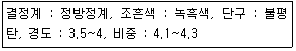
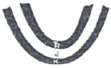
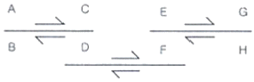
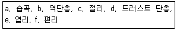
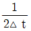
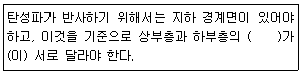

1과목: 암석학 및 광물학
1. 다음 중 안산암에 대한 설명으로 옳지 않은 것은?
2. 변성암에서 엽리구조가 발달하는 주 원인은 무엇인가?
3. 변성정도가 아주 높은 변성암에서 일반적으로 관찰되지않는 광물은?
4. 셰일(shale)이 이암(mudstone)과 다른 점은?
5. 퇴적암에서 관찰되는 구조 중 퇴적 당시 유수의 방향을 지시하는 것은?
6. 다음 중 편암에 대한 설명으로 옳지 않은 것은?
7. 다음 중 가장 높은 온도에서 생성되는 변성상은?
8. 다음 중 현무암질 마그마와 안산암질 마그마를 비교설명한 것으로 옳지 않은 것은?
9. 스트렉카이젠(Streckeisen)에 의해 제안되어 국제지질과학연합(IUGS)에서 수용된 화성암 분류의 기준이 되는 성분을 바르게 나타낸 것은?
10. 마그마가 분화작용을 받아 여러 가지 암석이 만들어질 때 설명으로 옳은 것은?
11. 황철석, 방연석 등의 표면에서 빛이 반사되어 나타나는 광택은?
12. 표축비(a:b:c)가 2:4:∞인 결정면의 밀러지수는?
13. 다음 중 먼저 존재하던 결정면 상에 다른 광물이 일정한 방위 관계를 유지하면서 성장하는 현상을 무엇이라 하는가?
14. 다음과 같은 성질을 갖는 광물은 어느 것인가?

15. 다음 중 결손 고용체에 해당하는 광물은?
16. 육면체상의 벽개를 보이는 대표적인 광물은?
17. 결정면의 성장에 대한 이론 중 나선상 성장이론에 대한 설명으로 맞는 것은?
18. 다음 중 평행연정(parallel growth)을 관찰할 수 있는 광물은?
19. 서로 같은 유형의 결정구조를 가진 광물들에 있어서 경도에 대한 일반적인 설명으로 옳지 않은 것은?
20. 다음 중 두 가지 이상의 원소로 구성된 이온은?
2과목: 구조지질학
21. 다음 중 신생대 고제3기에 해당하지 않는 것은?
22. 다음 중 지표나 지표 근처의 천부에서 주로 생성되는 절리는?
23. 다음 그림을 설명하는 용어로 맞는 것은? (단, TR. J. K는 각각 지질시대를 나타내는 약자며, 순서대로 Triassic, Jurassic, Cretaceous를 의미한다.)

24. 3개의 우수향 주향이동 단층이 발달하는 지역에서 압축운동이 가장 활발히 일어나는 지역과 인장운동이 가장 활발히 일어나는 지역을 바르게 짝지은 것은?

25. 밀도가 2500kg/m3, 인장강도 3MPa인 지층에서 정수유체 -압력비(λ)가 0.4라면 절리 형성의 최대깊이는 얼마인가? (단, 중력가속도는 9.8m/s2이다.)
26. 다음 중 평행 수계에 대한 설명으로 옳지 않은 것은?
27. 풍화작용에 영향을 미치는 요인이 아닌 것은?
28. 해양저 확장설(saa-floor spreading)의 가장 중요한 증거가 된 것은 해양지각의 자기이상대 무늬의 발견과 해석에서 비롯되었다고 한다. 해양저 확장의 가장 직접적인 증가가 된 것은 이러한 자기이상대의 어떠한 특성 때문인가?
29. 다음 중 우곡이 무수히 패여서 형성된 거친 지형을 무엇이라 하는가?
30. 다음 중 중생대 백악기 퇴적 분지가 아닌 것은?
31. 다음 중 연성변형의 산물로만 짝지은 것은?

32. 대규모 지진의 발생시 함께 발생할 수 있는 지표현상이 아닌 것은?
33. 다음 중 대륙충돌에 의해서 만들어진 산맥이 아닌 것은?
34. 하천의 근원지에서부터 하구까지 여행을 하게 되면 하도를 따라 다음과 같은 변화를 관찰할 수 있다. 다음 중 옳지 않은 것은?
35. 연약권(asthenosphere)에 대한 설명으로 옳지 않은 것은?
36. 수평 습곡측을 가지는 두 습곡에 의해 돔과 분지형태(dome and basin pattern)의 중첩습곡구조가 발생할 수 있는 경우는?
37. 주향과 경사가 각각 N30° E, 60° NW인 절리면이 있다. 이 절리면의 방향성을 경사방향/경사로 바르게 표시한 것은?
38. 다음 중 석회암 지대에서 형성되는 지형이 아닌 것은?
39. 2004년 12월에 발생하여 쓰나미 등 큰 재난을 야기하였던 인도네시아 지진 발생 지역과 가장 유사한 지체구조적 특성을 갖는 곳은?
40. 다음 중 드러스트 단층에 대한 설명으로 옳지 않은 것은?
3과목: 탐사공학
41. 반사법 탄성파 자료의 전산처리 과정 중에서 트레이스상에 직접파, 굴절파, 유도파 등의 잡음이 나타나는 부분이나 동보정 후에 파형의 신장이 심하게 나타나는 부분을 제거하는 작업은?
42. 반사법 탄성파탐사에 의해 획득한 48개의 트레이스를 갖는 하나의 CDP 자료가 있다. NMO 보정 후 중합하면 총 몇 개의 트레이스가 생성되는가?
43. 굴절법 탄성파탐사에서 임계굴절파가 직접파와 도달시간이 일치하는 거리를 무엇이라고 하는가?
44. 어느 매질의 유전상수는 4이고, 전기전도도는 1mS/m일 때 이 매질에서의 전자파 전달속도는 얼마인가? (단, 진공에서의 전자파 속도=0.3m/ns)
45. 매질의 음향 임피던스(acoustic impedance)와 관련이 있는 두 가지 매질의 성질은?
46. 다음 중 핵자력계에 대한 설명으로 옳지 않은 것은?
47. 다음 중 평균 대자율의 크기가 가장 큰 암석은?
48. 지구화학적으로 원소를 분류할 때 다음 중 친기 원소에 해당하지 않는 것은?
49. 자력탐사결과를 2차 미분하여 해석할 경우 어떤 이익이 있는가?
50. 지하투과 레이다 탐사의 적용분야가 아닌 것은?
51. 항공기나 배와 같이 움직이는 상태에서 중력을 측정했을 때만 적용되는 중력보정은?
52. 다음의 육상 전자 탐사법 중 측정하는 대상이 다른 것은 무엇인가?
53. 중력탐사는 암석의 밀도변화에 민감하다. 암석의 밀도에 영향을 미치는 지질학적 요인에 대한 설명으로 옳지 않은 것은?
54. 탄성파탐사는 크게 굴절법탐사와 반사법탐사로 나누어진다. 굴절법탐사에서 주로 사용하는 파는 다음 중 어느 것인가?
55. 탄성파 전파속도가 1000m/s이고 두께가 10m인 지표층 하부에 탄성파 전파속도가 2000m/s인 기반암이 놓여 있는 수평 2층 구조에서 굴절법 탄성파 탐사를 실시하였다. 발파점에서 50m 떨어진 수진점에서의 굴절파의 초동(first arrival)이 걸린 시간은 얼마인가?
56. 원소들의 분산이 일어나는 지구화학적 환경 중 2차 환경에 대한 설명으로 옳지 않은 것은?
57. 탄성파 탐사 자료를 처리할 때 사용되는 나이퀴스트 주파수(Nyquist frequency :

)에서 △t는 무엇을 의미하는가?58. 다음 중 수층이나 천부 지층에서 다중반사파와 관련된 울림현상을 크게 감쇠시키는 반사법 탄성파탐사의 자료처리과정은?
59. 다음 ()안에 알맞은 것은?

60. 다음 중 지층의 공극 또는 모세관을 통하여 전해질이 이동하면서 나타나는 자연전위는?
4과목: 지질공학
61. 사질토 지반에서 분사현상이 발생하기 위한 조건이 아닌 것은?
62. 흙의 다짐시험에서 관찰되는 특징으로 옳지 않은 것은?
63. 불규칙적인 불연속면에 다수 분포하는 암반사이에서 발생하는 사면파괴의 유형은?
64. 모래의 투수계수를 측정한 바, 공극비가 0.8일 때 8×10-2cm/sec를 얻었다. 오래의 공극비가 0.4일 때의 투수계수를 구하면 얼마인가?
65. 다음 중 일반적으로 허용지지력이 가장 큰 것은?
66. 흙의 기본물성에 대한 다음의 설명 중 맞는 것은?
67. 지반의 특성을 파악하고 실내시험용 시료를 얻기 위하여 사용하는 샘플러 중 비교한 시료의 채취에 사용되지 않는 것은?
68. 점참력이 없는 화강 풍화토로 구성도니 무한 사면을 조사한 결과 사면의 경사는 30°이고, 내부마찰각이 45°일 경우 이 사면의 안전율은 얼마인가? (단, 사면 내부에 지하수는 존재하지 않는다.)
69. 다음 중 터널의 일상적인 시공관리상 반드시 실시해야 하는 일상계측항목에 해당하지 않는 것은?
70. 스캔라인(Scan-line) 조사기법에 대한 설명으로 옳은 것은?
71. 다음 중 지반침하를 형태에 따라 분류할 때 골형 침하(trough subsidence)에 대한 설명으로 옳지 않은 것은?
72. 단위 수두 변화에 따라 단위 표면적당 투수성 층이 흡수하거나 배출하는 물의 체적을 의미하는 것은?
73. 암반 내의 인장균열(tension fracture)에 대한 설명으로 옳지 않은 것은?
74. 함수비가 20%인 흙 시료의 전체단위중량이 19.5kN/m3이고, 흙 입자의 비중은 2.72이다. 이 시료의 건조단위중량을 구하면 얼마인가? (단, 물의 단위중량은 9.81kN/m3으로 가정한다.)
75. 투수량계수(T)와 수리전도도(K) 및 포화된 대수층 두께(b)의 관계식으로 옳은 것은?
76. 다음 중 풍화에 따른 암석의 물리적ㆍ역학적 변화에 대한 설명으로 옳지 않은 것은?
77. 어떤 흙시료에 대한 일축압축시험결과 파괴면이 수평면과 이루는 각도는 55°이었다. 이 흙의 내부마찰각은?
78. 다음 지반개량공법 중 넓은 지역에 걸쳐 지표면에 미리 흙을 성토하여 실질적으로 구조물의 축조 후 침하를 없앨 수 있는 공법은?
79. 터널 굴진에 있어서 불연속면의 주향과 경사가 안정성에 미치는 영향 중 가장 불리한 경우는?
80. 암반 분류법인 RMR 분류법에서 기초 RMR값을 산정하는데 필요한 요소가 아닌 것은?
5과목: 광상학
81. 다음 중 산출광물과 주요 광상의 연결로 옳지 않은 것은?
82. 평안계의 사동통 지층에 관한 설명으로 옳지 않은 것은?
83. 화학적 풍화작용은 용해도가 큰 광물질을 제거하고 용해도가 낮은 광물질을 농집시키는 결과를 초래한다. 이러한 과정에 의하여 생성된 광상의 유형은?
84. 후생광상(Epigenetic deposits)이 생성되기 전에 광화용액이 침투하기 쉽고, 침전하기 좋은 여건을 마련해주는 전위적인 작용을 무엇이라 하는가?
85. 열수광상(hydrothermal ore deposits) 중에서 온도는 고온에서 저온까지 겹치고, 저압상태의 얕은 깊이(천부:Shallow depth)에서 형성된 광상은?
86. 다음 중 화산성 괴상 황화물광상에서 산출되는 전형적인 금속은?
87. 우리나라 비금속 광상의 주된 광화 시기는?
88. 고기의 변성암류의 엽리 등 층상구조에 거의 조화적으로 층상~렌즈상으로 배태된 소위 층상 함동유화철광상으로 유럽의 바리스칸, 칼레도니아 등 세계의 조산대내에 발달되는 주요 동 및 유화철광상의 주요 형태는?
89. 다음 중 우리나라의 금ㆍ은 광상의 형성과 가장 밀접한 관계가 있는 것은?
90. 다음 중 기성광상에서의 모암의 변질작용은?
91. 국내에서는 모암이 돌로마이트나 돌로마이트질 석회암인 것과 사문암인 것으로 대별되는데, 양질의 광석은 돌로마이트를 모암으로 하는 광상에서 산출되나, 광량면에서는 사문암을 모암으로 하는 광상이 전체의 90% 이상을 차지하는 광종은?
92. 다음 중 기성광상에서는 어느 원소를 포함하는 광물이 생기는 것이 특징인가?
93. 우리나라에서 형석광상의 주요 분포지역이 아닌 곳은?
94. 다음 중 지질 온도계(geothermometer)로 활용되지 않는 것은?
95. 광체보다 넓게 분포하여 광상탐사의 수단이며, 광상 생성에 대한 중요한 정보를 제공하는 것은?
96. 다음 중 충진(filling)작용의 증거가 아닌 것은?
97. 열수유체로부터 광석광물의 침전에 대한 주요 원인이 아닌 것은?
98. 황철석 등 황화광물이 풍부한 광상의 노두로서 황철석에서 유래된 갈철석 때문에 갈색이나 암갈색을 띠며 마치 불에 구운 것 같은 외관을 보이는 것은?
99. 우리나라에 분포하는 연-아연 광상에 대한 설명으로 옳지 않은 것은?
100. 국내 우라늄광상의 유형에 해당하지 않는 것은?